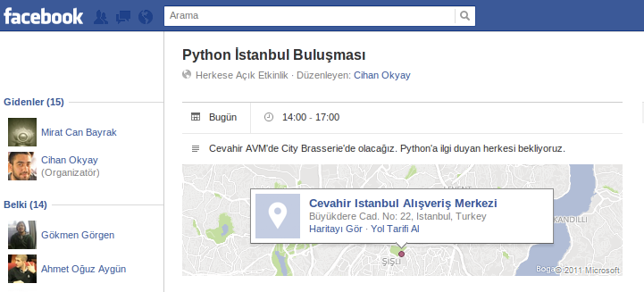

I Attended a Python Istanbul Meetup
In my previous post, I went on a rant about Facebook and proudly announced that I’d closed my account. But, thanks to finals week, I had to reopen it — there was simply no other way to communicate with my classmates. As I reopened my account, I thought, “Well, if I’m going to do this, I might as well block all the spammy invitations once and for all.” That’s when I stumbled upon something shocking: an actually useful event invitation!

I’d heard about the PyIST meetups a few times before and wanted to attend, but it had never worked out. This time, I finally managed to join one of their gatherings. It turned out to be a delightful experience with a lively discussion lasting about 3–4 hours. Mengü gave an excellent presentation on TurboGears, a Python web framework.
The Framework Debate: TurboGears vs. Django
In short, TurboGears sits somewhere between Pylons and Django. It offers flexibility, allowing you to choose your template engine and ORM, but still provides conveniences like admin panels and form generation from data models.
While the presentation was comprehensive, those of us from the "Django Republic" weren’t entirely sold. The question “Why should I switch to TurboGears?” didn’t quite get the answer we were hoping for. For example, using SQLAlchemy within Django felt unnecessary when Django’s ORM already does the job well enough for most cases. (That said, I have to admit, when it comes to queries involving generic foreign keys, Django can get a bit messy.)
For now, Django hasn’t given me the “I’m not enough for you anymore” message. Maybe as the complexity of my projects grows, I’ll find its limits, but for now, we’re good. I guess switching frameworks often boils down to personal preference.
JavaScript: Love It or Hate It?
At some point during the meetup, I tested the waters with a cheeky comment: “Can anyone actually love JavaScript?” If I hate it, everyone else must, right? While we agreed it’s an ancient language, the group pointed out that doesn’t make it unmanageable. They recommended I check out Douglas Crockford's book, JavaScript: The Good Parts. I plan to buy a physical copy soon because I’m tired of e-books and printing PDFs. (Did I mention I hate reading on screens?)
By the way, while researching the book, I discovered Crockford gave a long talk at the 2009 Free Software and Open Source Days event. If you're curious, you can watch it here.
The Meetup Vibes
Although the meetup was great, I couldn’t help but feel surprised that only eight people showed up in a city as massive as Istanbul. Developers — people whose job is to constantly learn — need these kinds of gatherings more than most. The cliché “Knowledge grows when shared” feels very appropriate here. Sure, you can share ideas, ask questions, or throw out quips online, but nothing beats sitting around a table with tea (or beer) and chatting face-to-face. It’s still the fastest and most effective form of communication — plus, you get some great memories and photos out of it.
Wrapping It Up
I don’t think I need to explain why building a community is so important — we’re probably on the same page here. I’ll end the post here, though it took me over two hours to get these four paragraphs just right. (Writing isn’t always easy!)
Before I go, here’s some food for thought: Oğuz showed me this tweet. It makes you wonder:
Boston, the city where Zuckerberg dropped out of university to build Facebook — is the strength of its developer community the cause of its success or the result of it?
02/2011